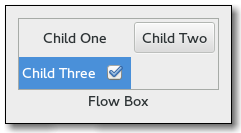

Gtk.FlowBox¶
Example¶

- Subclasses:
None
Methods¶
- Inherited:
Gtk.Container (35), Gtk.Widget (278), GObject.Object (37), Gtk.Buildable (10), Gtk.Orientable (2)
- Structs:
Gtk.ContainerClass (5), Gtk.WidgetClass (12), GObject.ObjectClass (5)
class |
|
|
|
|
|
|
|
|
|
|
|
|
|
|
|
|
|
|
|
|
|
|
|
|
|
|
|
|
|
|
|
|
|
|
|
|
|
|
|
|
Virtual Methods¶
|
|
|
|
Properties¶
- Inherited:
Name |
Type |
Flags |
Short Description |
|---|---|---|---|
r/w/en |
Activate row on a single click |
||
r/w/en |
The amount of horizontal space between two children |
||
r/w/en |
Whether the children should all be the same size |
||
r/w/en |
The maximum amount of children to request space for consecutively in the given orientation. |
||
r/w/en |
The minimum number of children to allocate consecutively in the given orientation. |
||
r/w/en |
The amount of vertical space between two children |
||
r/w/en |
The selection mode |
Style Properties¶
- Inherited:
Signals¶
- Inherited:
Name |
Short Description |
|---|---|
The |
|
The |
|
The |
|
The |
|
The |
|
The |
|
The |
Fields¶
- Inherited:
Name |
Type |
Access |
Description |
|---|---|---|---|
container |
r |
Class Details¶
- class Gtk.FlowBox(**kwargs)¶
- Bases:
- Abstract:
No
- Structure:
A
Gtk.FlowBoxpositions child widgets in sequence according to its orientation.For instance, with the horizontal orientation, the widgets will be arranged from left to right, starting a new row under the previous row when necessary. Reducing the width in this case will require more rows, so a larger height will be requested.
Likewise, with the vertical orientation, the widgets will be arranged from top to bottom, starting a new column to the right when necessary. Reducing the height will require more columns, so a larger width will be requested.
The size request of a
Gtk.FlowBoxalone may not be what you expect; if you need to be able to shrink it along both axes and dynamically reflow its children, you may have to wrap it in aGtk.ScrolledWindowto enable that.The children of a
Gtk.FlowBoxcan be dynamically sorted and filtered.Although a
Gtk.FlowBoxmust have onlyGtk.FlowBoxChildchildren, you can add any kind of widget to it viaGtk.Container.add(), and aGtk.FlowBoxChildwidget will automatically be inserted between the box and the widget.Also see
Gtk.ListBox.Gtk.FlowBoxwas added in GTK+ 3.12.- CSS nodes
flowbox ├── flowboxchild │ ╰── <child> ├── flowboxchild │ ╰── <child> ┊ ╰── [rubberband]
Gtk.FlowBoxuses a single CSS node with name flowbox.Gtk.FlowBoxChilduses a single CSS node with name flowboxchild. For rubberband selection, a subnode with name rubberband is used.- classmethod new()[source]¶
- Returns:
a new
Gtk.FlowBoxcontainer- Return type:
Creates a
Gtk.FlowBox.New in version 3.12.
- bind_model(model, create_widget_func, *user_data)[source]¶
- Parameters:
model (
Gio.ListModelorNone) – theGio.ListModelto be bound to selfcreate_widget_func (
Gtk.FlowBoxCreateWidgetFunc) – a function that creates widgets for itemsuser_data (
objectorNone) – user data passed to create_widget_func
Binds model to self.
If self was already bound to a model, that previous binding is destroyed.
The contents of self are cleared and then filled with widgets that represent items from model. self is updated whenever model changes. If model is
None, self is left empty.It is undefined to add or remove widgets directly (for example, with
Gtk.FlowBox.insert() orGtk.Container.add()) while self is bound to a model.Note that using a model is incompatible with the filtering and sorting functionality in
Gtk.FlowBox. When using a model, filtering and sorting should be implemented by the model.New in version 3.18.
- get_activate_on_single_click()[source]¶
-
Returns whether children activate on single clicks.
New in version 3.12.
- get_child_at_index(idx)[source]¶
- Parameters:
idx (
int) – the position of the child- Returns:
the child widget, which will always be a
Gtk.FlowBoxChildorNonein case no child widget with the given index exists.- Return type:
Gets the nth child in the self.
New in version 3.12.
- get_child_at_pos(x, y)[source]¶
- Parameters:
- Returns:
the child widget, which will always be a
Gtk.FlowBoxChildorNonein case no child widget exists for the given x and y coordinates.- Return type:
Gets the child in the (x, y) position.
New in version 3.22.6.
- get_column_spacing()[source]¶
- Returns:
the horizontal spacing
- Return type:
Gets the horizontal spacing.
New in version 3.12.
- get_homogeneous()[source]¶
-
Returns whether the box is homogeneous (all children are the same size). See
Gtk.Box.set_homogeneous().New in version 3.12.
- get_max_children_per_line()[source]¶
- Returns:
the maximum number of children per line
- Return type:
Gets the maximum number of children per line.
New in version 3.12.
- get_min_children_per_line()[source]¶
- Returns:
the minimum number of children per line
- Return type:
Gets the minimum number of children per line.
New in version 3.12.
- get_row_spacing()[source]¶
- Returns:
the vertical spacing
- Return type:
Gets the vertical spacing.
New in version 3.12.
- get_selected_children()[source]¶
- Returns:
A
GLib.Listcontaining theGtk.Widgetfor each selected child. Free with g_list_free() when done.- Return type:
Creates a list of all selected children.
New in version 3.12.
- get_selection_mode()[source]¶
- Returns:
- Return type:
Gets the selection mode of self.
New in version 3.12.
- insert(widget, position)[source]¶
- Parameters:
widget (
Gtk.Widget) – theGtk.Widgetto addposition (
int) – the position to insert child in
Inserts the widget into self at position.
If a sort function is set, the widget will actually be inserted at the calculated position and this function has the same effect as
Gtk.Container.add().If position is -1, or larger than the total number of children in the self, then the widget will be appended to the end.
New in version 3.12.
- invalidate_filter()[source]¶
Updates the filtering for all children.
Call this function when the result of the filter function on the self is changed due ot an external factor. For instance, this would be used if the filter function just looked for a specific search term, and the entry with the string has changed.
New in version 3.12.
- invalidate_sort()[source]¶
Updates the sorting for all children.
Call this when the result of the sort function on self is changed due to an external factor.
New in version 3.12.
- select_all()[source]¶
Select all children of self, if the selection mode allows it.
New in version 3.12.
- select_child(child)[source]¶
- Parameters:
child (
Gtk.FlowBoxChild) – a child of self
Selects a single child of self, if the selection mode allows it.
New in version 3.12.
- selected_foreach(func, *data)[source]¶
- Parameters:
func (
Gtk.FlowBoxForeachFunc) – the function to call for each selected child
Calls a function for each selected child.
Note that the selection cannot be modified from within this function.
New in version 3.12.
- set_activate_on_single_click(single)[source]¶
-
If single is
True, children will be activated when you click on them, otherwise you need to double-click.New in version 3.12.
- set_column_spacing(spacing)[source]¶
- Parameters:
spacing (
int) – the spacing to use
Sets the horizontal space to add between children. See the
Gtk.FlowBox:column-spacingproperty.New in version 3.12.
- set_filter_func(filter_func, *user_data)[source]¶
- Parameters:
filter_func (
Gtk.FlowBoxFilterFuncorNone) – callback that lets you filter which children to showuser_data (
objectorNone) – user data passed to filter_func
By setting a filter function on the self one can decide dynamically which of the children to show. For instance, to implement a search function that only shows the children matching the search terms.
The filter_func will be called for each child after the call, and it will continue to be called each time a child changes (via
Gtk.FlowBoxChild.changed()) or whenGtk.FlowBox.invalidate_filter() is called.Note that using a filter function is incompatible with using a model (see
Gtk.FlowBox.bind_model()).New in version 3.12.
- set_hadjustment(adjustment)[source]¶
- Parameters:
adjustment (
Gtk.Adjustment) – an adjustment which should be adjusted when the focus is moved among the descendents of container
Hooks up an adjustment to focus handling in self. The adjustment is also used for autoscrolling during rubberband selection. See
Gtk.ScrolledWindow.get_hadjustment() for a typical way of obtaining the adjustment, andGtk.FlowBox.set_vadjustment()for setting the vertical adjustment.The adjustments have to be in pixel units and in the same coordinate system as the allocation for immediate children of the box.
New in version 3.12.
- set_homogeneous(homogeneous)[source]¶
-
Sets the
Gtk.FlowBox:homogeneousproperty of self, controlling whether or not all children of self are given equal space in the box.New in version 3.12.
- set_max_children_per_line(n_children)[source]¶
- Parameters:
n_children (
int) – the maximum number of children per line
Sets the maximum number of children to request and allocate space for in self’s orientation.
Setting the maximum number of children per line limits the overall natural size request to be no more than n_children children long in the given orientation.
New in version 3.12.
- set_min_children_per_line(n_children)[source]¶
- Parameters:
n_children (
int) – the minimum number of children per line
Sets the minimum number of children to line up in self’s orientation before flowing.
New in version 3.12.
- set_row_spacing(spacing)[source]¶
- Parameters:
spacing (
int) – the spacing to use
Sets the vertical space to add between children. See the
Gtk.FlowBox:row-spacingproperty.New in version 3.12.
- set_selection_mode(mode)[source]¶
- Parameters:
mode (
Gtk.SelectionMode) – the new selection mode
Sets how selection works in self. See
Gtk.SelectionModefor details.New in version 3.12.
- set_sort_func(sort_func, *user_data)[source]¶
- Parameters:
sort_func (
Gtk.FlowBoxSortFuncorNone) – the sort function
By setting a sort function on the self, one can dynamically reorder the children of the box, based on the contents of the children.
The sort_func will be called for each child after the call, and will continue to be called each time a child changes (via
Gtk.FlowBoxChild.changed()) and whenGtk.FlowBox.invalidate_sort() is called.Note that using a sort function is incompatible with using a model (see
Gtk.FlowBox.bind_model()).New in version 3.12.
- set_vadjustment(adjustment)[source]¶
- Parameters:
adjustment (
Gtk.Adjustment) – an adjustment which should be adjusted when the focus is moved among the descendents of container
Hooks up an adjustment to focus handling in self. The adjustment is also used for autoscrolling during rubberband selection. See
Gtk.ScrolledWindow.get_vadjustment() for a typical way of obtaining the adjustment, andGtk.FlowBox.set_hadjustment()for setting the horizontal adjustment.The adjustments have to be in pixel units and in the same coordinate system as the allocation for immediate children of the box.
New in version 3.12.
- unselect_all()[source]¶
Unselect all children of self, if the selection mode allows it.
New in version 3.12.
- unselect_child(child)[source]¶
- Parameters:
child (
Gtk.FlowBoxChild) – a child of self
Unselects a single child of self, if the selection mode allows it.
New in version 3.12.
- do_activate_cursor_child() virtual¶
- do_child_activated(child) virtual¶
- Parameters:
child (
Gtk.FlowBoxChild) –
- do_move_cursor(step, count) virtual¶
- Parameters:
step (
Gtk.MovementStep) –count (
int) –
- Return type:
- do_select_all() virtual¶
Select all children of box, if the selection mode allows it.
New in version 3.12.
- do_selected_children_changed() virtual¶
- do_toggle_cursor_child() virtual¶
- do_unselect_all() virtual¶
Unselect all children of box, if the selection mode allows it.
New in version 3.12.
Signal Details¶
- Gtk.FlowBox.signals.activate_cursor_child(flow_box)¶
- Signal Name:
activate-cursor-child- Flags:
- Parameters:
flow_box (
Gtk.FlowBox) – The object which received the signal
The
::activate-cursor-childsignal is akeybinding signalwhich gets emitted when the user activates the box.
- Gtk.FlowBox.signals.child_activated(flow_box, child)¶
- Signal Name:
child-activated- Flags:
- Parameters:
flow_box (
Gtk.FlowBox) – The object which received the signalchild (
Gtk.FlowBoxChild) – the child that is activated
The
::child-activatedsignal is emitted when a child has been activated by the user.
- Gtk.FlowBox.signals.move_cursor(flow_box, step, count)¶
- Signal Name:
move-cursor- Flags:
- Parameters:
flow_box (
Gtk.FlowBox) – The object which received the signalstep (
Gtk.MovementStep) – the granularity fo the move, as aGtk.MovementStepcount (
int) – the number of step units to move
- Returns:
Trueto stop other handlers from being invoked for the event.Falseto propagate the event further.- Return type:
The
::move-cursorsignal is akeybinding signalwhich gets emitted when the user initiates a cursor movement.Applications should not connect to it, but may emit it with g_signal_emit_by_name() if they need to control the cursor programmatically.
The default bindings for this signal come in two variants, the variant with the Shift modifier extends the selection, the variant without the Shift modifer does not. There are too many key combinations to list them all here.
Arrow keys move by individual children
Home/End keys move to the ends of the box
PageUp/PageDown keys move vertically by pages
- Gtk.FlowBox.signals.select_all(flow_box)¶
- Signal Name:
select-all- Flags:
- Parameters:
flow_box (
Gtk.FlowBox) – The object which received the signal
The
::select-allsignal is akeybinding signalwhich gets emitted to select all children of the box, if the selection mode permits it.The default bindings for this signal is Ctrl-a.
- Gtk.FlowBox.signals.selected_children_changed(flow_box)¶
- Signal Name:
selected-children-changed- Flags:
- Parameters:
flow_box (
Gtk.FlowBox) – The object which received the signal
The
::selected-children-changedsignal is emitted when the set of selected children changes.Use
Gtk.FlowBox.selected_foreach() orGtk.FlowBox.get_selected_children() to obtain the selected children.
- Gtk.FlowBox.signals.toggle_cursor_child(flow_box)¶
- Signal Name:
toggle-cursor-child- Flags:
- Parameters:
flow_box (
Gtk.FlowBox) – The object which received the signal
The
::toggle-cursor-childsignal is akeybinding signalwhich toggles the selection of the child that has the focus.The default binding for this signal is Ctrl-Space.
- Gtk.FlowBox.signals.unselect_all(flow_box)¶
- Signal Name:
unselect-all- Flags:
- Parameters:
flow_box (
Gtk.FlowBox) – The object which received the signal
The
::unselect-allsignal is akeybinding signalwhich gets emitted to unselect all children of the box, if the selection mode permits it.The default bindings for this signal is Ctrl-Shift-a.
Property Details¶
- Gtk.FlowBox.props.activate_on_single_click¶
- Name:
activate-on-single-click- Type:
- Default Value:
- Flags:
Determines whether children can be activated with a single click, or require a double-click.
- Gtk.FlowBox.props.column_spacing¶
- Name:
column-spacing- Type:
- Default Value:
0- Flags:
The amount of horizontal space between two children.
- Gtk.FlowBox.props.homogeneous¶
- Name:
homogeneous- Type:
- Default Value:
- Flags:
Determines whether all children should be allocated the same size.
- Gtk.FlowBox.props.max_children_per_line¶
- Name:
max-children-per-line- Type:
- Default Value:
7- Flags:
The maximum amount of children to request space for consecutively in the given orientation.
- Gtk.FlowBox.props.min_children_per_line¶
- Name:
min-children-per-line- Type:
- Default Value:
0- Flags:
The minimum number of children to allocate consecutively in the given orientation.
Setting the minimum children per line ensures that a reasonably small height will be requested for the overall minimum width of the box.
- Gtk.FlowBox.props.row_spacing¶
- Name:
row-spacing- Type:
- Default Value:
0- Flags:
The amount of vertical space between two children.
- Gtk.FlowBox.props.selection_mode¶
- Name:
selection-mode- Type:
- Default Value:
- Flags:
The selection mode used by the flow box.